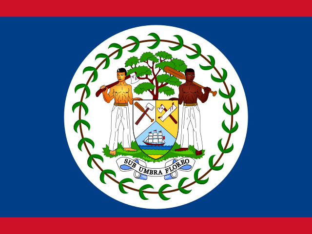
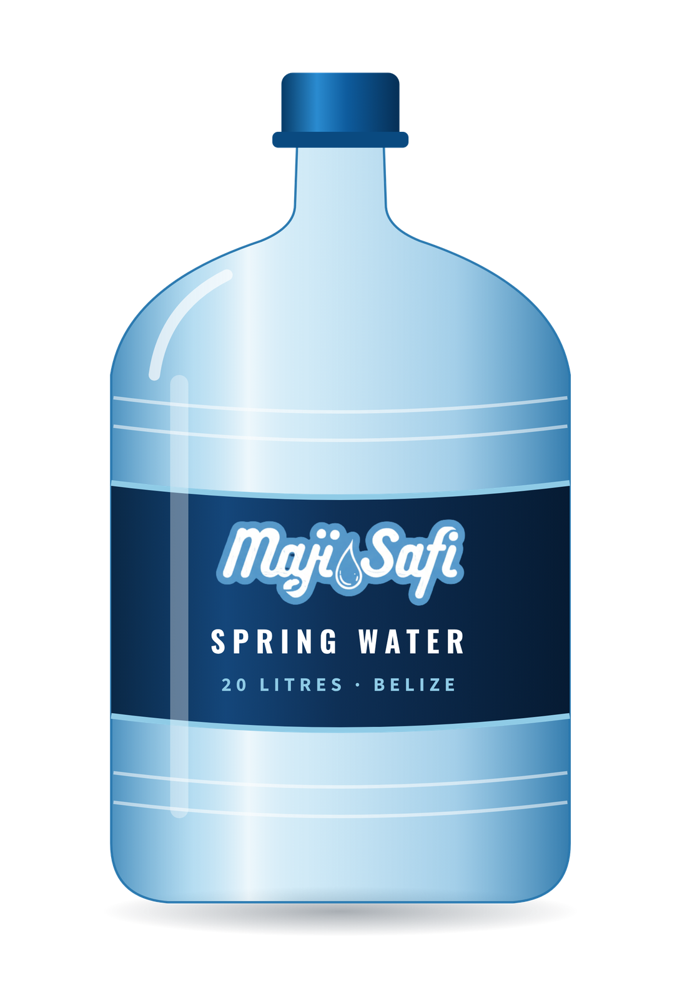
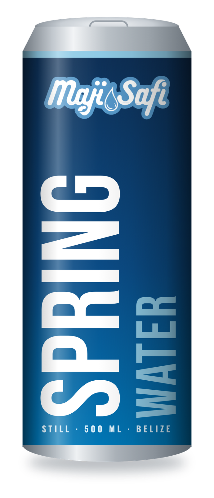
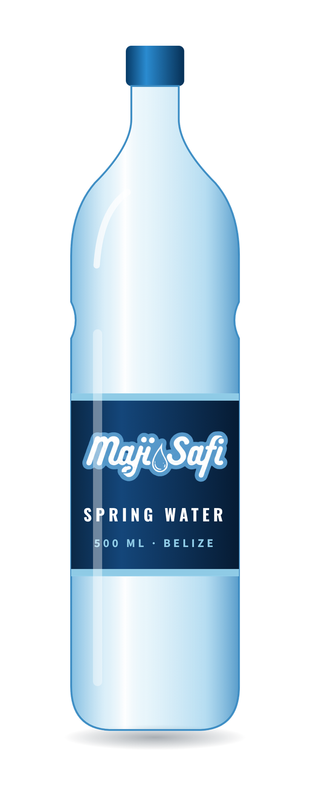
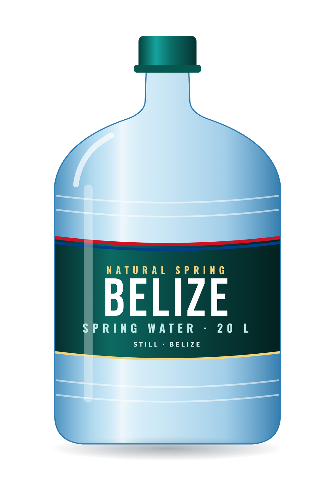
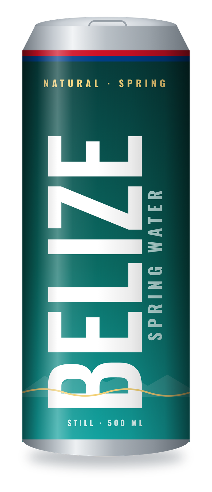
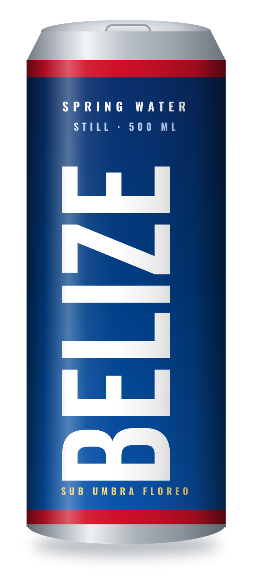

Our approach: the country, the market, what we can do, and how we could set up. For Amanuel, Mike and Sammy.

Safiflow Ventures Group · Oct 2026 · Draft for discussion
Page 1 · The approach on one pageBelize already buys its water. Nobody sells it a spring. We can.
74%
of homes buy their drinking water: about 82,000 homes
BZ$51M
a year spent on home water jars (our estimate)
552K
overnight visitors a year, 69% from the US
0
spring water brands. All sellers sell purified water.
Our approach: a partner's spring in Belize, treated with our Safi Treatment systems, sold as 20 L jars (same jar as Maji Safi, new label) and cans, with a small bottle as an option. We work with local players where it helps. A North American company handles the deals.
We bring
Treatment systems
A running plant model
Jar and delivery know-how
Moving parts
Investment and partners
Spring and lab tests
Costs and logistics
Open to discuss
Brand name
Deal structure
First plant size
SIB 2022 Census · BTB 2025 · market estimate: 82,264 homes × 2 jars/week × BZ$6 · all sources in the data notes
1
Maji Safi · BelizeThe country
Page 2 · Belize at a glanceA small country with a big visitor economy, next door to North America
397K
people · 110,719 homes
US$3.6B
GDP (2024), grew ~8% in 2024
60%
of foreign currency comes from tourism
552K
overnight visitors (2025)
967K
cruise visitors (2025)
2 : 1
BZ$ to US$, fixed · English-speaking
What drives the economy
Tourism: the biggest earner, mostly Americans
Agriculture and fishing: sugar, bananas, citrus, seafood (~8% of GDP)
Trade, transport, outsourcing
What it means for us
Visitors want premium water, often in cans
US dollars and English make deals with North America easy
Growth slowed in 2025, so prove demand first
Red: biggest city · Teal: main visitor island
SIB 2022 Census · US State Dept 2025 Investment Climate Statement · IMF Country Report 25/262 · BTB preliminary 2025 · Coface
2
Maji Safi · BelizeThe market
Page 3 · How Belize drinks water and how big the market isMost homes have tap water, yet three in four buy what they drink
Tap reaches homes, trust does not
Why people buy: water gets dirty in storage at home (E. coli was even found in dispenser water). A sealed jar, a clean dispenser swap and a named source win trust.
Is there a clear spring water brand?
No. Every seller we found sells purified (mostly RO) water. Nobody sells a named Belize spring, and nobody sells still water in a can.
Market size (our estimate)
BZ$51M
home jar market a year · 82,000 homes × 2 jars a week × BZ$6
BZ$2.6M
our jars at a 5% share · 428,000 jars a year
BZ$1.0M
our cans at 5% of visitor-days · 248,000 cans
US$1.8M
together, a year in sales at shelf prices, before costs
What a buyer pays
Price
Per litre
Crystal 5-gallon jar
BZ$6
0.32
Local 500 ml water
~BZ$1.25
2.50
Coca-Cola 12 oz glass
BZ$1
2.82
Water in visitor areas
~BZ$3
6.00
Imported can (La Croix)
~BZ$4
11.27
SIB 2022 Census · SIB/MoHW/BWS MICS7 statement, Nov 2025 · San Pedro Sun 2024 · Love FM · Luna Realty 2022 · estimates are ours; shelf prices to be confirmed in Belize
3
Maji Safi · BelizeCurrent players
Page 4 · Who is in the market, and who we could partner withOne big group, many small plants. Partners, not only rivals.
Crystal · Bowen & Bowen
National leader · 4 water plants · line fills 22,000 bottles an hour · BZ$40M facility (2016) · Belize's largest employer · also bottles Coca-Cola and brews Belikin
Bottled by Bowen & Bowen · BZ$1 drink
Zeta
Belmopan, Corozal · RO + UV · jars, ice
Aquatic Premium
Orange Walk · home delivery
Aquazul
Jars, ice, delivery
BEL AquA
Bluefield Belize Foods · since 2006
Agua Dulce
San Pedro · visitor island
Filter Pure
Home RO systems
Refill stations
Grocery stores · not audited
Partner ideas open for discussion
Who
What they have
How we could work together
Bowen & Bowen
Lines, trucks, shops nationwide
Canning or distribution deal for our spring water
Local jar plants (Zeta, Aquatic, Aquazul)
Jars, delivery routes, customers
Fill or deliver our jars in their area; we upgrade their treatment
Filter Pure
RO installs and service
Sell and service Safi Treatment systems
Resorts and hotels
Visitors, bars, boats
First can buyers; own-label water
Our spot
The only named spring, in jars and cans. Sealed, tested, delivered.
Logos: only Coca-Cola's is in hand. The other brand logos get added when we have the files. No public revenue figures were found for the private water companies.
7News Belize (2016) · Breaking Belize News (2014) · bowen.bz · business directories (to verify on the ground)
4
Maji Safi · BelizeWho we are
Page 5 · Maji Safi as a water treatment companyWe design, build and run treatment, and we sell our own water
Safiflow Ventures Group
The parent company: water treatment technology. Design, build, install, service.
Maji Safi
Our water brand. Plant running daily in Kampala at ~6,000 L/h. Zero E. coli in accredited lab tests.
Safi Treatment
Our system family: 10 modules, 500 to 20,000 L/h. Built to East African Standards (EAS 153, 39, 38).
All our treatment systems
System
Flow
Per day (10 h)
Fits Belize for
Safi S
500–1,000 L/h
5–10 m³
A small pilot, a resort, a village
Safi M (our Kampala plant)
2,000–4,000 L/h
20–40 m³
The first spring plant: jars + cans
Safi L
10,000–20,000 L/h
100–200 m³
A national hub, if demand grows
Containerised
To design
To design
Shipped ready to run; remote sites
Small systems near customers, like our Kampala model, mean less trucking of heavy jars. size open
What we can treat
Clean spring / town water Filters › UF › UV
Iron and manganese + iron media
Rivers, cloudy water + chlorine
Fluoride + fluoride media
Salty water › salt membranes (then it is "purified", not spring)
For a spring: micron filters, then ultrafiltration (0.01 µm), then UV. Germs out, natural minerals kept, no chemicals.
Safi Treatment Technical Data Sheet SF-TDS-001 · Safiflow Company Profile · accredited lab reports May and Sept 2026
5
Maji Safi · BelizeProducts
Page 6 · What we sell firstStart with 20 L jars and cans. Same jars as Maji Safi, new labels.
Option A · Maji Safi blue



20 L jar · firstCan · firstBottle · optional
Option B · A Belize spring name, made by Maji Safi



JarJungle canFlag can
Jars, the Oasis and Primo way: a dispenser in the home, a full jar swapped on a fixed day, ordered on WhatsApp. Repeat buyers every week.
Cans for visitors: resorts, bars and boats. No plastic bottle. Belize's deposit law already covers cans.
Brand: Option A or B decide later, after trademark checks. Designs are concepts.
Concept mockups by Maji Safi · Primo Brands and Oasis Water (South Africa) models · Returnable Containers Act Cap. 328:01
6
Maji Safi · BelizeHow we set up
Page 7 · Deal, moving parts, impact and next stepsHow we could set up, what it takes, and the story we tell
The deal (my thinking)
A North American company handles the deals and the Belize brand, because that side of the world knows how North America works. Who owns what is open for discussion.
Partners: Maji Safi (treatment, plant, operations) · the Belize partner (spring and land) · an investor · Mike leads the Belize side.
Moving parts
Investment: find who will partner and fund it
Tests: spring water lab tests (wet and dry season) and flow
First cost analysis: machines, site, cans, jars. Prepared with Mike
Logistics: shipping machines and cans, site, roads, power
Permits: water licence, bottled water standard BZS 10, company setup
Social impact stories
Every can, a school tap. Only 58.3% of Belize schools have drinking water; part of every can funds safe water at schools.
Refill, not plastic. Plastic is 67% of Belize litter; one refilled jar replaces dozens of bottles.
Clean water for villages. About 20 rural villages lack basic water systems; Safi Treatment can serve them.
Local jobs at the plant, on delivery routes and in sales.
Next:1 · Spring test and site visit→2 · Cost analysis and logistics→3 · Partners and investors→4 · Launch jars, then cans
UNICEF Belize 2024 · 2025 TrashBlitz audit · Water Industry Act Cap. 222 · BZS 10:2002 · Sammy Ghedamu, CEO · sammy@maji-safi.com